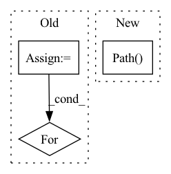

Pattern ID :41203
Before Change
env.random_state = np.random.RandomState(5)
env.reset(pile_file=env.PILES_DIR / "00001000.npz")
root_dir = home / "data/mercury/reorient/00001000/seed5"
for npz_file in sorted(root_dir.listdir()):
result = np.load(npz_file)
grasp_pose = result["grasp_pose"]
reorient_pose = result["reorient_pose"]After Change
pp.connect(use_gui=True)
pp.add_data_path()
root_dir = path.Path( "/home/wkentaro/data/mercury/reorient/n_class_5")
for npz_file in sorted(root_dir.listdir()):
view_npz_file(npz_file=npz_file)
In pattern: SUPERPATTERN
Frequency: 4
Non-data size: 3
Instances Fragment ID: 116221274
Project Name: wkentaro/safepicking
Commit Name: 98e47ca102663d1c22326a970257527541e9db45
Time: 2021-05-28
Author: www.kentaro.wada@gmail.com
File Name: examples/reorient/view_dataset.py
M Class Name: AnonimousClass
N Class Name: AnonimousClass
M Method Name: main(0)
N Method Name: main(0)
M Parent Class:
N Parent Class:
M File Name: examples/reorient/view_dataset.py
N File Name: examples/reorient/view_dataset.py
M Start Line: 18
M End Line: 48
N Start Line: 86
N End Line: 93
Before Change
// Label encoder:
encoder = hparams["label_encoder"]
dsets = [hparams["train_data"], hparams["valid_data"], hparams["test_data"]]
for dset in dsets:
encoder.update_from_didataset(dset, "phn", sequence_input=True)
for dset in dsets:
dset.add_dynamic_item("phn_enc", encoder.encode_sequence_torch, "phn")
dset.set_output_keys(["id", "wav", "phn_enc"])
align_brain = AlignBrain(hparams["modules"], hparams["opt_class"], hparams)After Change
def main():
experiment_dir = pathlib.Path( __file__) .resolve().parent
hparams_file = experiment_dir / "hyperparams.yaml"
data_folder = "../../../../samples/audio_samples/nn_training_samples"
data_folder = (experiment_dir / data_folder).resolve() Fragment ID: 116221269
Project Name: speechbrain/speechbrain
Commit Name: c9b83509f0a07e61ef75f23e359eec163c98ad12
Time: 2020-12-26
Author: mirco.ravabelli@gmail.com
File Name: recipes/minimal_examples/neural_networks/ASR_alignment_forward/example_asr_alignment_forward_experiment.py
M Class Name: AnonimousClass
N Class Name: AnonimousClass
M Method Name: main(0)
N Method Name: main(0)
M Parent Class:
N Parent Class:
M File Name: recipes/minimal_examples/neural_networks/ASR_alignment_forward/example_asr_alignment_forward_experiment.py
N File Name: recipes/minimal_examples/neural_networks/ASR_alignment_forward/example_asr_alignment_forward_experiment.py
M Start Line: 44
M End Line: 70
N Start Line: 100
N End Line: 126
Before Change
// Label encoder:
encoder = hparams["label_encoder"]
dsets = [hparams["train_data"], hparams["valid_data"], hparams["test_data"]]
for dset in dsets:
encoder.update_from_didataset(dset, "phn", sequence_input=True)
for dset in dsets:
dset.add_dynamic_item("phn_enc", encoder.encode_sequence_torch, "phn")
dset.set_output_keys(["id", "wav", "phn_enc"])
align_brain = AlignBrain(hparams["modules"], hparams["opt_class"], hparams)After Change
def main():
experiment_dir = pathlib.Path( __file__) .resolve().parent
hparams_file = experiment_dir / "hyperparams.yaml"
data_folder = "../../../../samples/audio_samples/nn_training_samples"
data_folder = (experiment_dir / data_folder).resolve() Fragment ID: 116221281
Project Name: speechbrain/speechbrain
Commit Name: c9b83509f0a07e61ef75f23e359eec163c98ad12
Time: 2020-12-26
Author: mirco.ravabelli@gmail.com
File Name: recipes/minimal_examples/neural_networks/ASR_alignment_viterbi/example_asr_alignment_viterbi_experiment.py
M Class Name: AnonimousClass
N Class Name: AnonimousClass
M Method Name: main(0)
N Method Name: main(0)
M Parent Class:
N Parent Class:
M File Name: recipes/minimal_examples/neural_networks/ASR_alignment_viterbi/example_asr_alignment_viterbi_experiment.py
N File Name: recipes/minimal_examples/neural_networks/ASR_alignment_viterbi/example_asr_alignment_viterbi_experiment.py
M Start Line: 46
M End Line: 72
N Start Line: 106
N End Line: 132